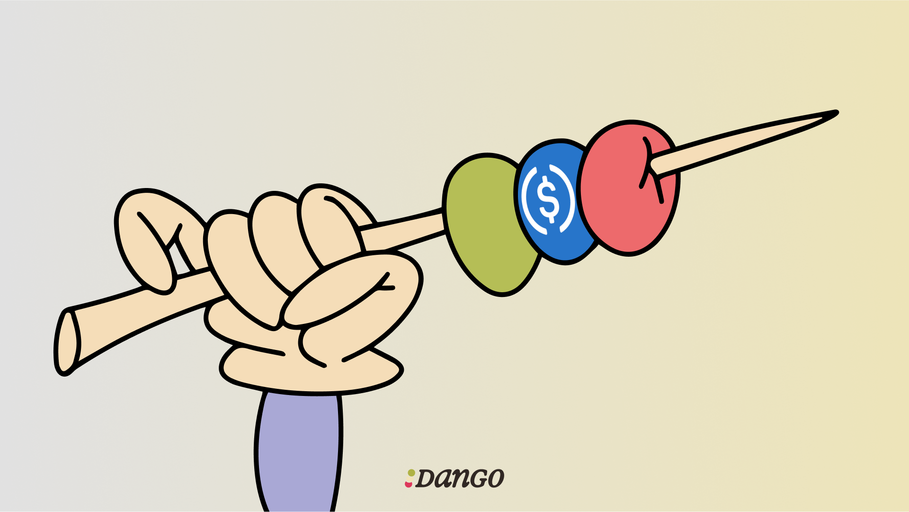

We‚Äôre launching a new chain called üç° Dango!
It will be a DeFi hub with novel leverage capabilities and a true next-gen user experience.
Dango is uniquely positioned, because we purposely design & build our own infra with use case and UX in mind: app-driven infra development. This allows us to do things our competitors can’t, and makes our product harder to replicate.
Let’s discuss specifically what problems users are facing today, and Dango’s solutions to them.
This article outlines our current plans and thoughts on Dango, which may change as development goes on.
A DEX with new capabilities
Finance is the art of matching the needs of two groups of people: the risk seekers who look for higher margin opportunities, and the risk avoiders who seek less volatile sources of yield.
In TradFi, the two groups are connected by intermediaries such as banks and brokerages.
An intermediary would take a deposit from the risk avoider, and lend it as margin to the risk seeker, who would use it to trade. The intermediary would ensure the loan is safe by means of liquidations. The risk seeker would pay an interest on the margin, which is routed back to the risk avoider, after the intermediary took a cut.
Both parties get what they want – a win-win situation.
Does DeFi, in its current state, serve them well? Our assessment is no.
Consider how a risk seeker would use DeFi to go levered long on their $100 worth of Bitcoin. They would deposit WBTC into Aave, borrow up to $73 USDC,[1] and swap the USDC to WBTC. This achieves a 1.73x leverage at most, lower than what most traders desire (3-10x).
You can achieve ~3.7x leverage through “looping”,[2] but that’s hardly a feasible solution for 99% of the users due to complexity and gas cost.
The lack of the capability to trade spot at sufficient leverage is why we think perpetual futures have taken most of this space’s mindshare.
Perps are not perfect though:
- an orderbook-based, peer-to-peer perp can deviate from the market price if parameters aren’t properly chosen;
- an oracle-based, peer-to-pool perp requires a pool of liquidity providers to take the counterparty position, who are at risk of unbounded loss if traders on aggregate win.
And of course, for traders who only want moderate leverage (2-3x), perp funding rates can be more expensive than the margin rates they can get from CEXs.
As DeFi fails to serve the risk seeker, it also fails the risk avoiders by missing out on less volatile yield opportunities for them.
Dango aims to fix this with a new primitive, the margin account. Pioneered by Gearbox and Mars Protocol, perfected at Dango.

Here’s how the aforementioned risk seeker would use our margin account to achieve their goal: they would deposit $100 BTC into their margin account, borrow $200 of USDC, and swap those to BTC. That’s a 3x leverage.
What does this mean for the risk avoider? Well, the margin account now has $300 of assets backing $200 of liabilities – fully collateralized. That’s as safe as lending on Aave, while there are $200 generating yield for you instead of $73.
What’s even better, the margin account is cross-collateralized, meaning you can undertake various activities with your margin account: trade spot, trade perps, trade options, lend, yield farm… which all contribute to an account-level health factor.
Want to segregate your assets and reduce risk? Just open another spot or margin account. You can open any many accounts you want.
To start with, Dango will ship 3 apps, providing leverage for risk seekers and ample yield opportunities for risk avoiders:
- the margin account
- a spot DEX
- a perp DEX
Post-launch, we expect to see 3rd party apps deployed on Dango and utilize the margin account system.
No one left out
Another group of users that DeFi has failed to serve is holders of BTC, BCH, LTC, DOGE, XRP, TRX, ADA… they have not been meaningfully connected to mainstream DeFi.
DeFi natives often dismiss these chains as “dinosaurs”, but truth is they still have many billions of dollars of mcap and significant volume, which make CEXs absolutely swimming in revenue that DeFi has failed to capture.
Here at Dango, we will work on connecting every chain via various bridge technologies:
- Ethereum and EVM L2s, Solana, Move ecosystem, and Near via Union;
- Cosmos ecosystem via IBC;
- Bitcoin and others: we’re exploring implementing our own MPC/TSS bridge. Alternatively we may use existing solutions such as THORChain.
You will be able to deposit native (not wrapped) BTC directly to Dango, just like how you’d do with Binance or Coinbase.
Our goal is to leave no one out.
Actually good UX
Our goal is to achieve a UX comparable to that of CEXs. We see 3 prerequisites in making this happen:
- a novel account system
- an integrated UI
- a user-friendly fee scheme
At Dango, we take a key-less and wallet-less approach for our UX, made possible by our unique account system.
When signing up, instead of generating a seed phrase, you will choose a human-readable username, such as @Larry, as you would do when signing up for Twitter or Instagram.
This username is onchain, representing your identity and reputation.
Under this username, on the one hand, you can open accounts: spot accounts, margin accounts, or multisigs.
On the other hand, you can add any number of authentication methods – Passkeys, legacy wallets (MetaMask, Phantom, Backpack, Keplr), or hardware keys (Ledger, YubiKey).
You can send transactions from any of your accounts signed by any of the authenticators associated with your username.
Dango does not have a browser extension wallet. Instead, we take a Passkey-first approach.
In modern electronic devices, Passkeys are stored in a secure enclave and synchronized across devices. You will be able to seamlessly create a Passkey on a Mac, and sign transactions on an iPhone using Face ID.
Sync’ing between devices of different families (e.g. iPhone <> Windows PCs) is more challenging, but doable – we will make this simple for you.
We believe this is the best UX for 99% of the users out there. For the remaining 1%, you can always fallback to an authentication methods of your choice.
Something we hate about DeFi in its current form, is the fragmentated UX – to swap some tokens, go to uniswap.exchange; to borrow or lend, go to aave.com; to trade perps, or buy shitcoins, or do something else, go to 10 other different websites…
Dango, instead, runs on a single integrated UI, the Dango Portal. In this single UI you will onboard, manage your accounts, deposit or withdraw assets, and interact with every app on the chain.
Every use case on Dango is abstracted as an “applet”:
- account creation – an applet
- bridging – an applet
- trading spot, on margin, or perps – an applet
- earn yield – an applet
- manage portfolio – an applet
- block explorer – an applet
- help center – an applet
The source code of applets are stored onchain, and served on-demand in a decentralized manner.
Discover apps through our Spotlight search bar. Want to swap tokens? Type anything related such as “buy”, “sell”, “swap”, “trade”, “convert”… Spotlight will understand your intent and take you to the right applet.

At launch, listing apps in the Dango Portal will be permissioned – just like the original iPhone only came with 1st party apps from Apple. This is necessary to ensure a safe and high quality UX. We’d rather have a handful of good apps, than a thousand poorly made or scammy apps.
Gradually, we plan to open up app listing – just like the iPhone did.
For 3rd party builders, we believe Spotlight will be a great venue for distributing your apps, gaining exposure and mindshare.
We work extremely hard with top UI/UX designers to ensure a high quality and coherent experience across all applets. Our goal: anything you want to do, you don’t have to leave the Portal; everything you do, there’s a consistent and polished experience.
Dango operates on a USDC standard. This means you will use USDC to pay for gas; assets will be paired with USDC in the DEX; yields will be paid in USDC.
Of course, we’re fully aware that USDC is a centralized asset. However, its benefits far outweigh the drawback, with no alternative coming even close:
- It’s a stablecoin. Users like to pay fees in a stablecoin, and understand their portfolio value in terms of a stable asset.
- It’s a truly omni-chain asset. Using ETH as native currency? You leave out all Solana users. They’d have to download MetaMask and get ETH into their wallet, before being able to use Dango. With USDC, we can onboard users from everywhere, thanks to the CCTP protocol.
The best part of this, is we don’t need to do any BD in order to get native USDC, thanks to Noble and Cosmos IBC!
The Dango chain
Dango will be an L1 blockchain utilizing our own smart contract engine, Grug, running on top of the Tendermint consensus protocol.
Dango will have a proof of authority validator set of ~20 nodes, selected by the Left Curve Foundation (LCF), based on cost and reputation, among other factors.
This setup is similar to that of Binance Smart Chain. If BSC is secure enough for you to ape in, Dango should be good too.
The validators have no power in governance, take no delegation of tokens, and earn no revenue from onchain sources. We think these things are distractions from the things users care about, and thus are better avoided.
Instead, validators simply bill the LCF for operating costs, while 100% of captured value goes to token holders and affiliate marketers (more on this later).
We’re aiming to launch Dango with 0.5 second block time.
Thanks to Tendermint, Dango blocks have instant finality- meaning your transactions will be confirmed within no longer than 1 block of time (unlike on Solana where you have to wait a few seconds, despite block time being 400 ms), and that withdrawals are immediately honored.
Dango can process close to 2,000 transactions per second (TPS). The sheer amount of TPS is never our focus, and 2K should be sufficient for our short term goals.
Onwards, if more throughput is needed, we have a few tricks up our sleeves, namely: Diem’s Block-STM, Monad’s MonadDB, Avalanche’s Firewood, and Sei’s mmap and optimistic block building – we take inspirations from the brightest minds in the web3 space.
The Dango token
Dango’s token is DNG, with a total supply of 30,000.
DNG will accrue value from:
As is the case for most tech startups, we think at this stage it’s more important to capture market share than to extract value. At a later time, DNG holders can vote to turn on the fee switch.
There won’t be any staking mechanism. Our assessment is user don’t like to stake or lockup tokens. Instead, 100% of fees collected will be used to buy back & burn DNG.
The exception to this is users onboarded via referral links. 50% of all fees they pay in the first 4 years since signing up go to the affiliates who referred them.
Our goal for the distribution of DNG is at least half of total supply should go to the community (non-insiders); among which as much as possible should be liquid at TGE.
While subject to change, our current plan for tokenomics is:
- 30% – ICO[4]
- 15% – lockdrop[4]
- 15% – liquidity incentives (to be released over over 4 years)
- 15% – team
- 15% – investors
- 5% – service providers (e.g. advisors, launchpad)
- 5% – foundation
We plan to do an ICO that is in compliance with the MiCA framework. 30% of the token supply will be available to European residents and we think much of the rest of the world, depending on regulatory clarity.
We will do a lockdrop, which is an event where participants lock up assets in Dango’s AMM, margin pool, or perp counterparty pool for a chosen amount of time, in exchange for tokens. Allocation scales superlinearly with the lockup period to compensate for risks involved.
There is no plan for any airdrop, incentivized testnet, or points program. The only ways to acquire DNG is to participate in ICO or lockdrop during TGE, or yield farm post-TGE.
When?
We’re expecting to launch Dango Chaosnet in Q3 of 2025.
The word Chaosnet is chosen to highlight the fact that Dango is highly experimental technology – there will probably be unrefined UX, bugs here and there… “chaos”.
Once the tech is matured and proven, Dango will transition into its Mainnet.
Onwards from here, as development progresses, we will release a series of public demo-nets, each with incrementally more features.
We’re expecting demonet-1 some time after New Year, equipped with our account system, oracle, and a basic spot DEX.
To builders
I encourage you to consider building on Dango:
- Grug allows you to create apps not possible in other VMs;
- your app can plug into our margin account system – super useful especially if you’re building anything involving leverage; and
- Spotlight can be a great venue for distributing your app.
We probably won’t have a grant program, which has proven ineffective in nurturing a loyal dev community. However, as founder, I will do everything within reasonable limits to support you. This includes reviewing your code, paying for your audits, review your pitch deck, connecting you with investors, or even getting in the trenches writing code if that helps you meet your goals.
I’m sure you don’t get support like this from any other ecosystem! You’re important to us, and I want to make sure you’re treated as such.
Backers
Dango is supported by a $3.6M seed round co-led by Lemniscap and Hack VC, with participation by Cherry Crypto, Interop, Public Works, Delphi Labs,[5] and more… Thank you!!
That’s all!
Thank you for reading, and stay tuned by following our Twitter account, and joining our Discord server!
Footnotes
- WBTC’s max LTV is 73.00%, meaning for each $100 of WBTC you can borrow up to $73 of debt. [^]
- Calculated as: 1 / (1 - 73%) = 3.7 (this, btw, is the same formula for the money supply multiplier of fractional reserve banking.) [^]
- These will have their rates set to zero at launch. [^]
- To be fully liquid at TGE, while the rest subject to a multi-year unlocking with cliff. [^]
- Not Delphi Ventures, which is a different entity. [^]